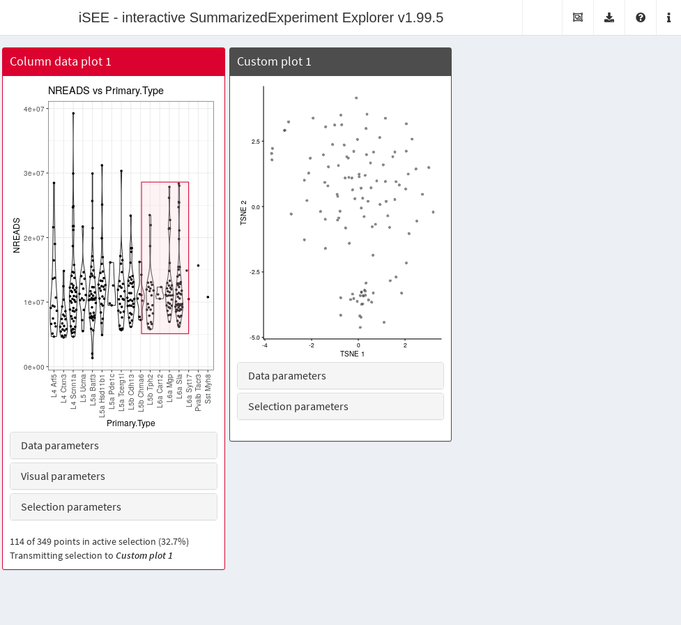
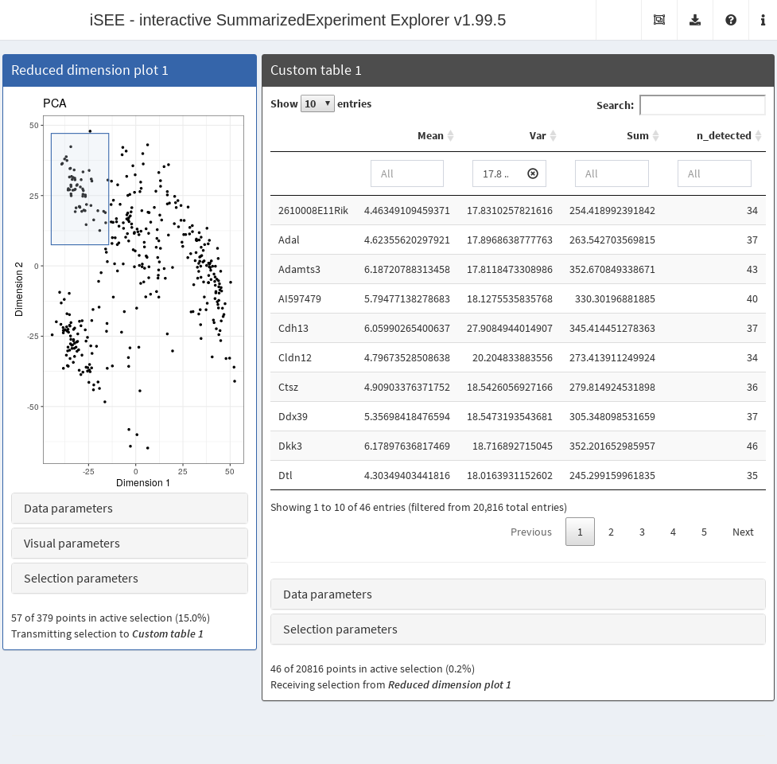

Deploying custom panels in the iSEE
interface
Kevin Rue-Albrecht
MRC WIMM Centre for Computational Biology, University of Oxford, Oxford, OX3 9DS, UKkevinrue67@gmail.com
Federico Marini
Institute of Medical Biostatistics, Epidemiology and Informatics (IMBEI), MainzCenter for Thrombosis and Hemostasis (CTH), Mainzmarinif@uni-mainz.de
Charlotte Soneson
Friedrich Miescher Institute for Biomedical Research, Basel, SwitzerlandSIB Swiss Institute of Bioinformaticscharlottesoneson@gmail.com
Aaron Lun
Cancer Research UK Cambridge Institute, University of Cambridgeinfinite.monkeys.with.keyboards@gmail.com
4 October 2022
Source:vignettes/custom.Rmd
custom.RmdCompiled date: 2022-10-04
Last edited: 2020-04-20
License: MIT + file LICENSE
Background
Users can define their own custom plots or tables to include in the
iSEE interface (Rue-Albrecht et al.
2018). These custom panels are intended to receive subsets of
rows and/or columns from other transmitting panels in the interface. The
values in the custom panels are then recomputed on the fly by
user-defined functions using the transmitted subset. This provides a
flexible and convenient framework for lightweight interactive analysis
during data exploration. For example, selection of a particular subset
of samples can be transmitted to a custom plot panel that performs
dimensionality reduction on that subset. Alternatively, the subset can
be transmitted to a custom table that performs a differential expression
analysis between that subset and all other samples.
Defining custom functions
Minimum requirements
Recalculations in custom panels are performed using user-defined
functions that are supplied to the iSEE() call. The only
requirements are that the function must accept:
- A
SummarizedExperimentobject or its derivatives as the first argument. - A list of character vectors containing row names as the
second argument. Each vector specifies the rows that are
currently selected in the transmitting row-based panel, as an
active selection or as one of the saved selection. This may be
NULLif no transmitting panel was selected or if no selections are available. - A list of character vectors containing column names as the
third argument. Each vector specifies the columns that are
currently selected in the transmitting column-based panel, as
an active selection or as one of the saved selection. This may be
NULLif no transmitting panel was selected or if no selections are available.
The output of the function should be:
- A
ggplotobject for functions used in custom plot panels. - A
data.framefor functions used in custom table panels.
Example of custom plot panel
To demonstrate the use of custom plot panels, we define an
example function CUSTOM_DIMRED that takes a subset of
features and cells in a SingleCellExperiment object and
performs dimensionality reduction on that subset with scater
function (McCarthy et al. 2017).
library(scater)
CUSTOM_DIMRED <- function(se, rows, columns, ntop=500, scale=TRUE,
mode=c("PCA", "TSNE", "UMAP"))
{
print(columns)
if (is.null(columns)) {
return(
ggplot() + theme_void() + geom_text(
aes(x, y, label=label),
data.frame(x=0, y=0, label="No column data selected."),
size=5)
)
}
mode <- match.arg(mode)
if (mode=="PCA") {
calcFUN <- runPCA
} else if (mode=="TSNE") {
calcFUN <- runTSNE
} else if (mode=="UMAP") {
calcFUN <- runUMAP
}
set.seed(1000)
kept <- se[, unique(unlist(columns))]
kept <- calcFUN(kept, ncomponents=2, ntop=ntop,
scale=scale, subset_row=unique(unlist(rows)))
plotReducedDim(kept, mode)
}As mentioned above, rows and columns may be
NULL if no selection was made in the respective
transmitting panels. How these should be treated is up to the
user-defined function. In this example, an empty ggplot is
returned if there is no selection on the columns, while the default
behaviour of runPCA, runTSNE, etc. is used if
rows=NULL.
To create instances of our panel, we call the
createCustomPlot() function with CUSTOM_DIMRED
to set up the custom plot class and its methods. This returns a
constructor function that can be directly used to generate an instance
of our custom plot.
library(iSEE)
GENERATOR <- createCustomPlot(CUSTOM_DIMRED)
custom_panel <- GENERATOR()
class(custom_panel)
#> [1] "CustomPlot"
#> attr(,"package")
#> [1] ".GlobalEnv"We can now easily supply instances of our new custom plot class to
iSEE() like any other Panel instance. The
example below creates an application where a column data plot transmits
a selection to our custom plot, the latter of which is initialized in
\(t\)-SNE mode with the top 1000 most
variable genes.
# NOTE: as mentioned before, you don't have to create 'BrushData' manually;
# just open an app, make a brush and copy it from the panel settings.
cdp <- ColumnDataPlot(
XAxis="Column data",
XAxisColumnData="Primary.Type",
PanelId=1L,
BrushData=list(
xmin = 10.1, xmax = 15.0, ymin = 5106720.6, ymax = 28600906.0,
coords_css = list(xmin = 271.0, xmax = 380.0, ymin = 143.0, ymax = 363.0),
coords_img = list(xmin = 352.3, xmax = 494.0, ymin = 185.9, ymax = 471.9),
img_css_ratio = list(x = 1.3, y = 1.2),
mapping = list(x = "X", y = "Y", group = "GroupBy"),
domain = list(
left = 0.4, right = 17.6, bottom = -569772L, top = 41149532L,
discrete_limits = list(
x = list("L4 Arf5", "L4 Ctxn3", "L4 Scnn1a",
"L5 Ucma", "L5a Batf3", "L5a Hsd11b1", "L5a Pde1c",
"L5a Tcerg1l", "L5b Cdh13", "L5b Chrna6", "L5b Tph2",
"L6a Car12", "L6a Mgp", "L6a Sla", "L6a Syt17",
"Pvalb Tacr3", "Sst Myh8")
)
),
range = list(
left = 68.986301369863, right = 566.922374429224,
bottom = 541.013698630137, top = 33.1552511415525
),
log = list(x = NULL, y = NULL),
direction = "xy",
brushId = "ColumnDataPlot1_Brush",
outputId = "ColumnDataPlot1"
)
)
custom.p <- GENERATOR(mode="TSNE", ntop=1000,
ColumnSelectionSource="ColumnDataPlot1")
app <- iSEE(sce, initial=list(cdp, custom.p)) 
The most interesting aspect of createCustomPlot() is
that the UI elements for modifying the optional arguments in
CUSTOM_DIMRED are also automatically generated. This
provides a convenient way to generate a reasonably intuitive UI for
rapid prototyping, though there are limitations - see the documentation
for more details.
Example of custom table panel
To demonstrate the use of custom table panels, we define an
example function CUSTOM_SUMMARY below. This takes a subset
of features and cells in a SingleCellExperiment object and
creates dataframe that details the mean,
variance and count of samples with expression above a given
cut-off within the selection. If either rows or
columns are NULL, all rows or columns are
used, respectively.
CUSTOM_SUMMARY <- function(se, ri, ci, assay="logcounts", min_exprs=0) {
if (is.null(ri)) {
ri <- rownames(se)
} else {
ri <- unique(unlist(ri))
}
if (is.null(ci)) {
ci <- colnames(se)
} else {
ci <- unique(unlist(ci))
}
assayMatrix <- assay(se, assay)[ri, ci, drop=FALSE]
data.frame(
Mean = rowMeans(assayMatrix),
Var = rowVars(assayMatrix),
Sum = rowSums(assayMatrix),
n_detected = rowSums(assayMatrix > min_exprs),
row.names = ri
)
}To create instances of our panel, we call the
createCustomTable() function with
CUSTOM_SUMMARY, which again returns a constructor function
that can be used directly in iSEE(). Again, the function
will attempt to auto-pick an appropriate UI element for each optional
argument in CUSTOM_SUMMARY.
library(iSEE)
GENERATOR <- createCustomTable(CUSTOM_SUMMARY)
custom.t <- GENERATOR(PanelWidth=8L,
ColumnSelectionSource="ReducedDimensionPlot1",
SearchColumns=c("", "17.8 ... 10000", "", "") # filtering for HVGs.
)
class(custom.t)
#> [1] "CustomTable"
#> attr(,"package")
#> [1] ".GlobalEnv"
# Preselecting some points in the reduced dimension plot.
# Again, you don't have to manually create the 'BrushData'!
rdp <- ReducedDimensionPlot(
PanelId=1L,
BrushData = list(
xmin = -44.8, xmax = -14.3, ymin = 7.5, ymax = 47.1,
coords_css = list(xmin = 55.0, xmax = 169.0, ymin = 48.0, ymax = 188.0),
coords_img = list(xmin = 71.5, xmax = 219.7, ymin = 62.4, ymax = 244.4),
img_css_ratio = list(x = 1.3, y = 1.29),
mapping = list(x = "X", y = "Y"),
domain = list(left = -49.1, right = 57.2, bottom = -70.3, top = 53.5),
range = list(left = 50.9, right = 566.9, bottom = 603.0, top = 33.1),
log = list(x = NULL, y = NULL),
direction = "xy",
brushId = "ReducedDimensionPlot1_Brush",
outputId = "ReducedDimensionPlot1"
)
)
app <- iSEE(sce, initial=list(rdp, custom.t))
Handling active and saved selections
Recall that the second and third arguments are actually lists
containing both active and saved selections from the transmitter. More
advanced custom panels can take advantage of these multiple selections
to perform more sophisticated data processing. For example, we can write
a function that computes log-fold changes between the samples in the
active selection and the samples in each saved selection. (It would be
trivial to extend this to obtain actual differential expression
statistics, e.g., using scran::findMarkers() or functions
from packages like limma.)
CUSTOM_DIFFEXP <- function(se, ri, ci, assay="logcounts") {
ri <- ri$active
if (is.null(ri)) {
ri <- rownames(se)
}
assayMatrix <- assay(se, assay)[ri, , drop=FALSE]
if (is.null(ci$active) || length(ci)<2L) {
return(data.frame(row.names=character(0), LogFC=integer(0))) # dummy value.
}
active <- rowMeans(assayMatrix[,ci$active,drop=FALSE])
all_saved <- ci[grep("saved", names(ci))]
lfcs <- vector("list", length(all_saved))
for (i in seq_along(lfcs)) {
saved <- rowMeans(assayMatrix[,all_saved[[i]],drop=FALSE])
lfcs[[i]] <- active - saved
}
names(lfcs) <- sprintf("LogFC/%i", seq_along(lfcs))
do.call(data.frame, lfcs)
}We also re-use these statistics to visualize some of the genes with the largest log-fold changes:
CUSTOM_HEAT <- function(se, ri, ci, assay="logcounts") {
everything <- CUSTOM_DIFFEXP(se, ri, ci, assay=assay)
if (nrow(everything) == 0L) {
return(ggplot()) # empty ggplot if no genes reported.
}
everything <- as.matrix(everything)
top <- head(order(rowMeans(abs(everything)), decreasing=TRUE), 50)
topFC <- everything[top, , drop=FALSE]
dfFC <- data.frame(
gene=rep(rownames(topFC), ncol(topFC)),
contrast=rep(colnames(topFC), each=nrow(topFC)),
value=as.vector(topFC)
)
ggplot(dfFC, aes(contrast, gene)) + geom_raster(aes(fill = value))
}We test this out as shown below. Note that each saved selection is also the active selection when it is first generated, hence the log-fold changes of zero in the last column of the heat map until a new active selection is drawn.
TAB_GEN <- createCustomTable(CUSTOM_DIFFEXP)
HEAT_GEN <- createCustomPlot(CUSTOM_HEAT)
rdp[["SelectionHistory"]] <- list(
list(lasso = NULL, closed = TRUE, panelvar1 = NULL, panelvar2 = NULL,
mapping = list(x = "X", y = "Y"),
coord = structure(c(-44.3, -23.7, -13.5, -19.6,
-33.8, -48.6, -44.3, -33.9, -55.4, -43.0,
-19.5, -4.0, -22.6, -33.9), .Dim = c(7L, 2L)
)
)
)
app <- iSEE(sce, initial=list(rdp,
TAB_GEN(ColumnSelectionSource="ReducedDimensionPlot1"),
HEAT_GEN(ColumnSelectionSource="ReducedDimensionPlot1"))
)
Advanced extensions
The system described above is rather limited and is only provided for quick-and-dirty customizations. For more serious extensions, we provide a S4 framework for native integration of user-created panels into the application. This allows specification of custom interface elements and observers and transmission of multiple selections to other panels. Prospective panel developers are advised to read the book, as there are too many cool things that will not fit into this vignette.
Session Info
sessionInfo()
#> R version 4.2.1 (2022-06-23)
#> Platform: x86_64-pc-linux-gnu (64-bit)
#> Running under: Ubuntu 20.04.5 LTS
#>
#> Matrix products: default
#> BLAS: /usr/lib/x86_64-linux-gnu/openblas-pthread/libblas.so.3
#> LAPACK: /usr/lib/x86_64-linux-gnu/openblas-pthread/liblapack.so.3
#>
#> locale:
#> [1] LC_CTYPE=en_US.UTF-8 LC_NUMERIC=C
#> [3] LC_TIME=en_US.UTF-8 LC_COLLATE=en_US.UTF-8
#> [5] LC_MONETARY=en_US.UTF-8 LC_MESSAGES=en_US.UTF-8
#> [7] LC_PAPER=en_US.UTF-8 LC_NAME=C
#> [9] LC_ADDRESS=C LC_TELEPHONE=C
#> [11] LC_MEASUREMENT=en_US.UTF-8 LC_IDENTIFICATION=C
#>
#> attached base packages:
#> [1] stats4 stats graphics grDevices utils datasets methods
#> [8] base
#>
#> other attached packages:
#> [1] iSEE_2.9.12 scater_1.25.7
#> [3] ggplot2_3.3.6 scuttle_1.7.4
#> [5] SingleCellExperiment_1.19.1 SummarizedExperiment_1.27.3
#> [7] Biobase_2.57.1 GenomicRanges_1.49.1
#> [9] GenomeInfoDb_1.33.7 IRanges_2.31.2
#> [11] S4Vectors_0.35.4 BiocGenerics_0.43.4
#> [13] MatrixGenerics_1.9.1 matrixStats_0.62.0
#> [15] BiocStyle_2.25.0
#>
#> loaded via a namespace (and not attached):
#> [1] ggbeeswarm_0.6.0 colorspace_2.0-3
#> [3] rjson_0.2.21 ellipsis_0.3.2
#> [5] rprojroot_2.0.3 circlize_0.4.15
#> [7] XVector_0.37.1 GlobalOptions_0.1.2
#> [9] BiocNeighbors_1.15.1 fs_1.5.2
#> [11] clue_0.3-61 ggrepel_0.9.1
#> [13] DT_0.25 fansi_1.0.3
#> [15] splines_4.2.1 codetools_0.2-18
#> [17] sparseMatrixStats_1.9.0 doParallel_1.0.17
#> [19] cachem_1.0.6 knitr_1.40
#> [21] jsonlite_1.8.0 cluster_2.1.4
#> [23] png_0.1-7 shinydashboard_0.7.2
#> [25] shiny_1.7.2 BiocManager_1.30.18
#> [27] compiler_4.2.1 assertthat_0.2.1
#> [29] Matrix_1.5-1 fastmap_1.1.0
#> [31] cli_3.4.1 later_1.3.0
#> [33] BiocSingular_1.13.1 htmltools_0.5.3
#> [35] tools_4.2.1 igraph_1.3.5
#> [37] rsvd_1.0.5 gtable_0.3.1
#> [39] glue_1.6.2 GenomeInfoDbData_1.2.9
#> [41] dplyr_1.0.10 Rcpp_1.0.9
#> [43] jquerylib_0.1.4 pkgdown_2.0.6.9000
#> [45] vctrs_0.4.2 nlme_3.1-159
#> [47] rintrojs_0.3.2 iterators_1.0.14
#> [49] DelayedMatrixStats_1.19.1 xfun_0.33
#> [51] stringr_1.4.1 beachmat_2.13.4
#> [53] mime_0.12 miniUI_0.1.1.1
#> [55] lifecycle_1.0.2 irlba_2.3.5
#> [57] shinyAce_0.4.2 zlibbioc_1.43.0
#> [59] scales_1.2.1 colourpicker_1.1.1
#> [61] ragg_1.2.3 promises_1.2.0.1
#> [63] parallel_4.2.1 RColorBrewer_1.1-3
#> [65] ComplexHeatmap_2.13.1 yaml_2.3.5
#> [67] memoise_2.0.1 gridExtra_2.3
#> [69] sass_0.4.2 stringi_1.7.8
#> [71] highr_0.9 desc_1.4.2
#> [73] foreach_1.5.2 ScaledMatrix_1.5.1
#> [75] BiocParallel_1.31.12 shape_1.4.6
#> [77] rlang_1.0.6 pkgconfig_2.0.3
#> [79] systemfonts_1.0.4 bitops_1.0-7
#> [81] fontawesome_0.3.0 evaluate_0.16
#> [83] lattice_0.20-45 purrr_0.3.4
#> [85] htmlwidgets_1.5.4 tidyselect_1.1.2
#> [87] magrittr_2.0.3 bookdown_0.29
#> [89] R6_2.5.1 generics_0.1.3
#> [91] DelayedArray_0.23.2 DBI_1.1.3
#> [93] mgcv_1.8-40 pillar_1.8.1
#> [95] withr_2.5.0 RCurl_1.98-1.8
#> [97] tibble_3.1.8 crayon_1.5.2
#> [99] shinyWidgets_0.7.3 utf8_1.2.2
#> [101] rmarkdown_2.16 viridis_0.6.2
#> [103] GetoptLong_1.0.5 grid_4.2.1
#> [105] digest_0.6.29 xtable_1.8-4
#> [107] httpuv_1.6.6 textshaping_0.3.6
#> [109] munsell_0.5.0 beeswarm_0.4.0
#> [111] viridisLite_0.4.1 vipor_0.4.5
#> [113] bslib_0.4.0 shinyjs_2.1.0
# devtools::session_info()